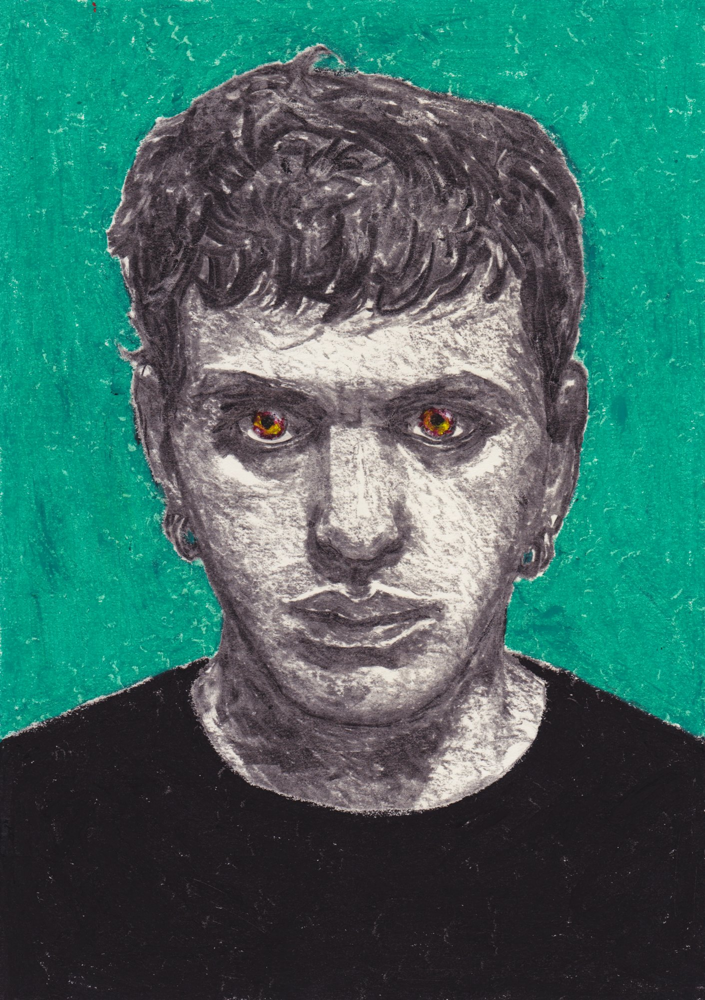
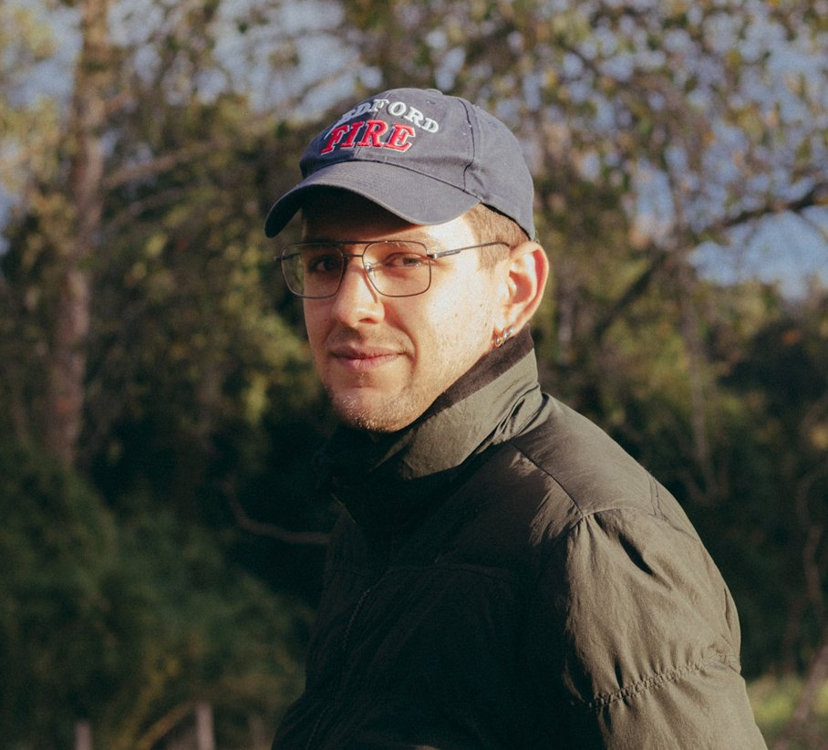

Narrador Visual

Director, Editor, Animador y Productor.
Construyo mundos y personajes a través del cine y el dibujo.
Cortometrajes, videoclips, videoperformance y animación.

Realizador audiovisual chileno (1993) con más de una década de trayectoria en dirección, montaje, animación y producción. Su trabajo abarca largometrajes, cortometrajes, videoclips, videoperformance, animación y piezas comerciales. Ha sido parte de festivales internacionales en España, Finlandia y Chile, obteniendo el premio del público en FECICH con su largometraje Las Veletas. Colabora con artistas, músicos, marcas e instituciones culturales. Basado en Santiago de Chile.